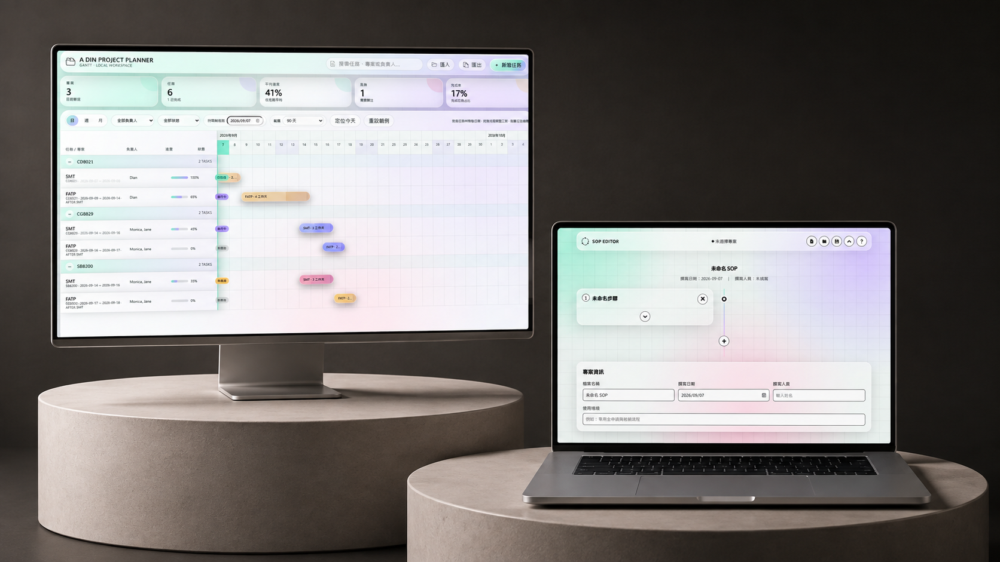

Portfolio / AI
AI
Applications
有些工具，從工作裡的一點不順手開始。將設計與辦公流程中反覆出現的需求，做成日常用得上的工具，讓日常工作更順一些。
View ProjectsSelected Projects / 01—06
Applied AI
Archive
Workflow Applications
From repetitive work to reusable systems
經驗散在文件裡，任務排在時間裡，設計版本藏在資料夾裡。這些工具各自回應一種日常需要，也記錄了將 AI 帶進工作的方法。